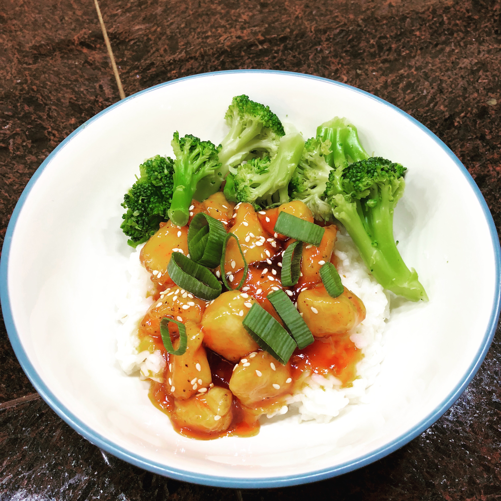

Sweet & Sour Chicken

Ingredients
Sauce
- 3/4 cup sugar
- 1/2 cup apple cider vinegar
- 1/4 cup ketchup
- 2 tablespoons soy sauce
- 1 tablespoon sesame oil
- 1 tablespoon brown sugar
- 3 cloves garlic, minced
- 2 tablespoons cold water
- 1 tablespoon cornstarch
Chicken
- 1-1.5 lbs chicken breasts
- 3 tablespoons cornstarch
- Salt and pepper, to taste
- 3-4 tablespoons olive oil
- 2 green onions
- 1 tablespoon sesame seeds
Instructions
In a medium saucepan, add all sauce ingredients except water and cornstarch. Whisk to combine, and bring to a boil over medium-high heat. Meanwhile, in a small bowl, mix the water and cornstarch.
Once boiling, add the water/cornstarch mix to the sauce ingredients. Reduce to low and allow to simmer for 5 minutes, stirring occasionally. The sauce should thicken.
While the sauce is cooking, cut the chicken breasts into bite sized pieces. In a large ziplock bag, add the chicken, cornstarch, salt and pepper. Seal and shake until chicken is coated.
In a large skillet, add the olive oil and chicken. Cook on medium-high heat until chicken has cooked through (about 7 minutes).
Once chicken is cooked, reduce to low. Add sauce to chicken and simmer for 2 minutes.
Serve immediately. Garnish with green onions and sesame seeds. We enjoy ours over rice with broccoli. Enjoy!
Original source: Averie Cooks